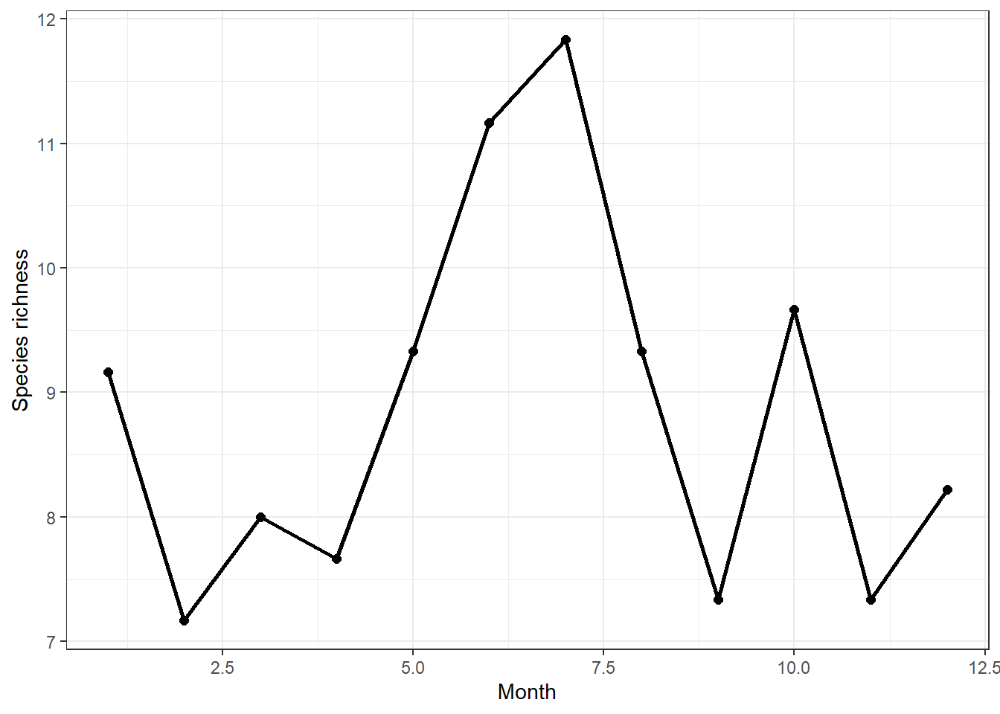
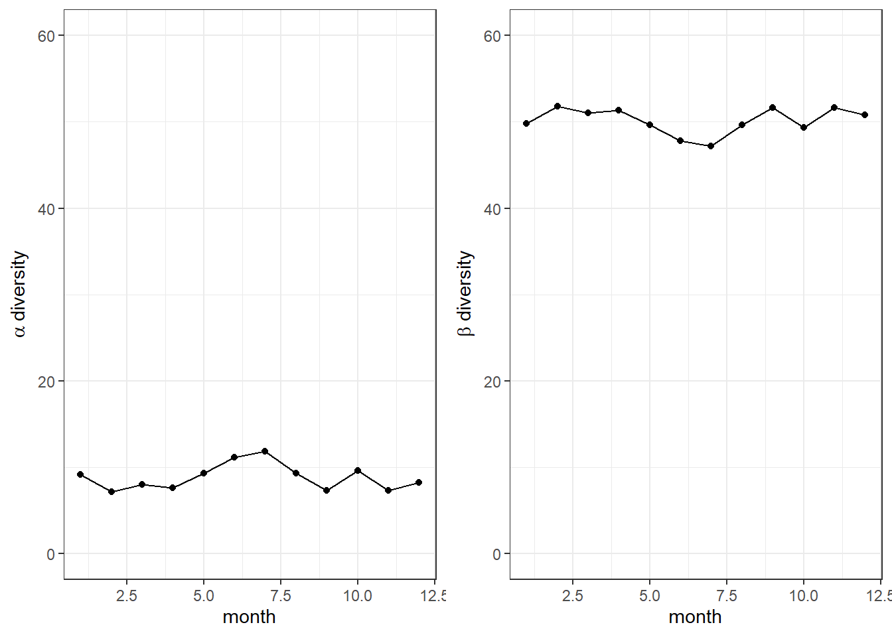
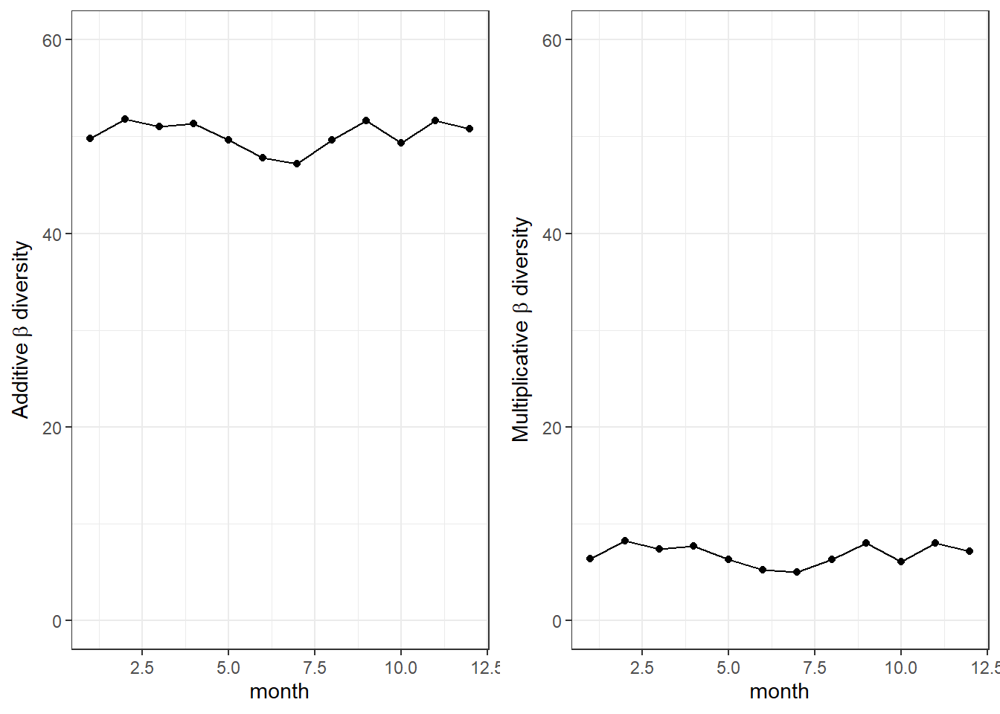
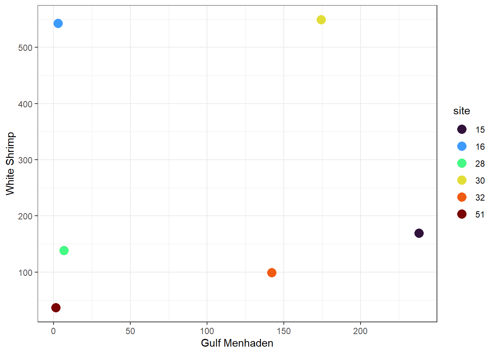
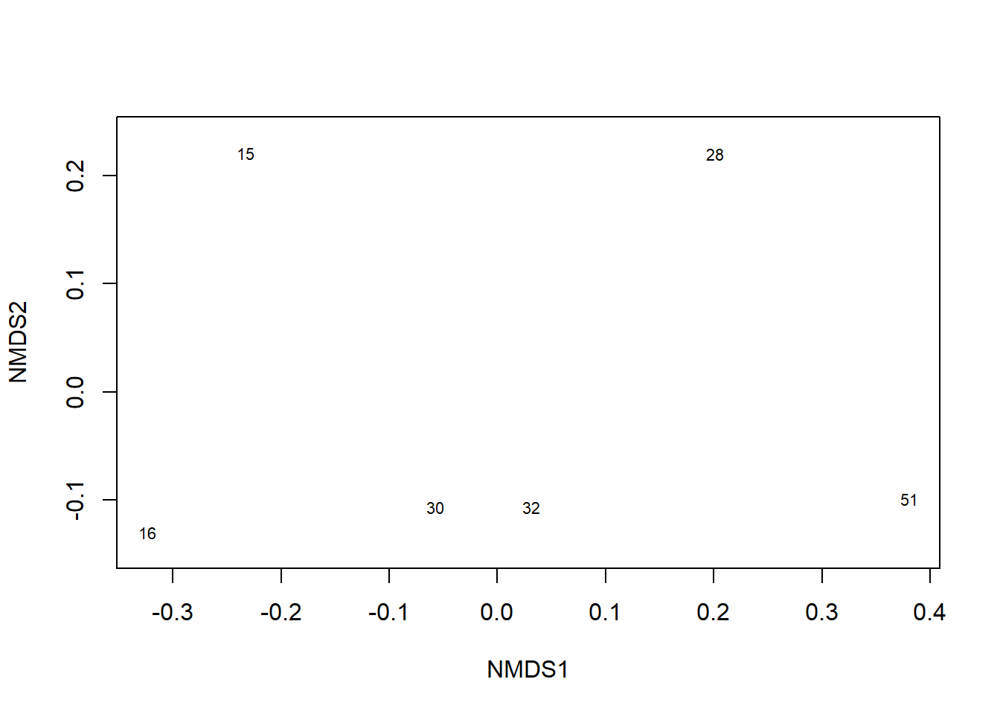
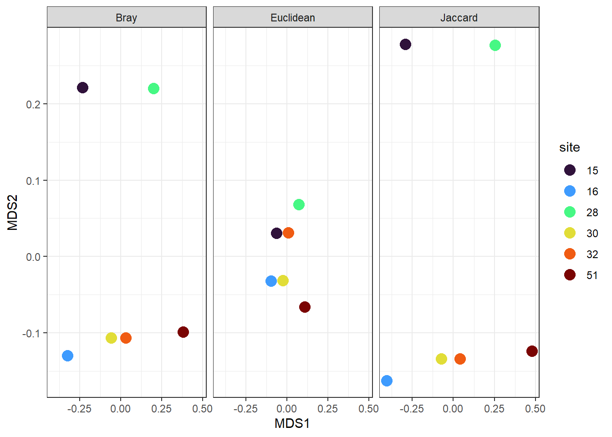
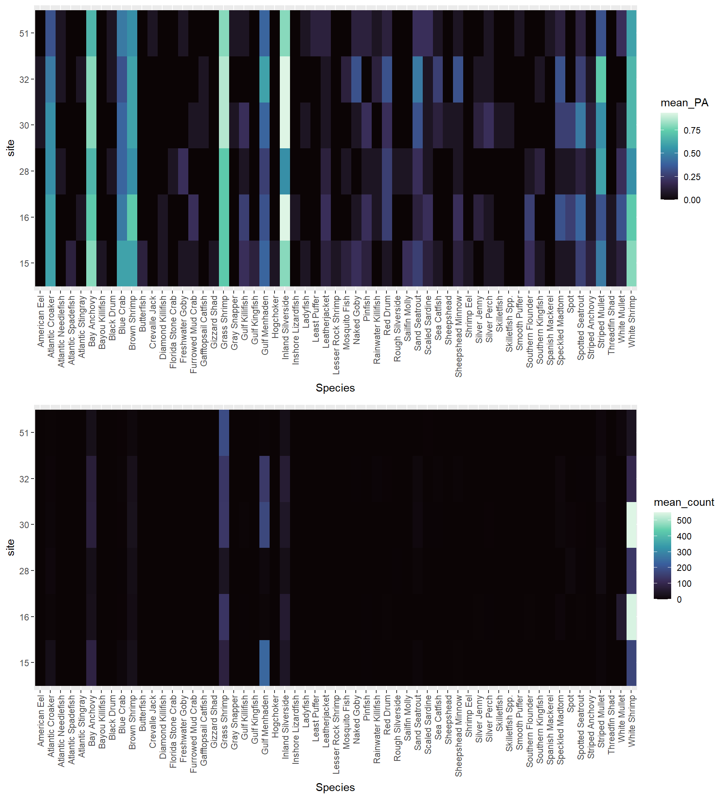

# calculate metrics for each pool
library(tidyverse)
## ── Attaching core tidyverse packages ──────────────────────── tidyverse 2.0.0 ──
## ✔ dplyr 1.1.4 ✔ readr 2.1.5
## ✔ forcats 1.0.0 ✔ stringr 1.5.1
## ✔ ggplot2 3.5.1 ✔ tibble 3.2.1
## ✔ lubridate 1.9.3 ✔ tidyr 1.3.1
## ✔ purrr 1.0.2
## ── Conflicts ────────────────────────────────────────── tidyverse_conflicts() ──
## ✖ dplyr::filter() masks stats::filter()
## ✖ dplyr::lag() masks stats::lag()
## ℹ Use the conflicted package (<http://conflicted.r-lib.org/>) to force all conflicts to become errors
# data in wide format
marsh_w = read_csv('data/Calcasieu.csv') |>
mutate(site = as.character(site),
month = month(date))
## Rows: 90 Columns: 62
## ── Column specification ────────────────────────────────────────────────────────
## Delimiter: ","
## chr (1): basin
## dbl (60): site, Speckled Madtom, Sailfin Molly, Blue Crab, Atlantic Croaker...
## date (1): date
##
## ℹ Use `spec()` to retrieve the full column specification for this data.
## ℹ Specify the column types or set `show_col_types = FALSE` to quiet this message.
marsh_w
## # A tibble: 90 × 63
## site date basin `Speckled Madtom` `Sailfin Molly` `Blue Crab`
## <chr> <date> <chr> <dbl> <dbl> <dbl>
## 1 15 2007-01-10 Calcasieu 2 1 10
## 2 15 2007-02-22 Calcasieu 0 0 0
## 3 15 2007-03-02 Calcasieu 0 0 19
## 4 15 2007-04-11 Calcasieu 0 2 23
## 5 15 2007-06-05 Calcasieu 0 0 0
## 6 15 2007-07-24 Calcasieu 0 0 3
## 7 15 2007-08-07 Calcasieu 0 0 6
## 8 15 2007-09-20 Calcasieu 0 0 0
## 9 15 2007-09-27 Calcasieu 0 0 0
## 10 15 2007-10-03 Calcasieu 0 0 0
## # ℹ 80 more rows
## # ℹ 57 more variables: `Atlantic Croaker` <dbl>, `Gulf Menhaden` <dbl>,
## # `Grass Shrimp` <dbl>, `Striped Mullet` <dbl>, `Inland Silverside` <dbl>,
## # `Sheepshead Minnow` <dbl>, `Gulf Killifish` <dbl>, `Freshwater Goby` <dbl>,
## # `Mosquito Fish` <dbl>, `White Shrimp` <dbl>, `Bay Anchovy` <dbl>,
## # `Southern Flounder` <dbl>, `Diamond Killifish` <dbl>, `Naked Goby` <dbl>,
## # `Brown Shrimp` <dbl>, `Sand Seatrout` <dbl>, Pinfish <dbl>, …Workshop 8: Community data: vegan and multivariate methods
This workshop discusses working with community data by introducing the vegan package and how to do simple multivariate analyses.
R script: github
Community Data
Community data can vary in format, but typically involves abundance, biomass, or CPUE data for multiple species collected in each sample. Data can be stored in wide (species ID for each column) or long format. The vegan package can be useful for calculating diversity metrics. vegan calculates metrics from a community matrix (long format).
vegan diversity functions
There are useful functions in vegan that can be used to calculate diverstiy metrics.
specnumber() calculates species richness. diversity() can calculate Shannon, simpson, and inverse simpson metrics.
library(vegan)
## Loading required package: permute
## Loading required package: lattice
## This is vegan 2.6-8
marsh_div = marsh_w |>
mutate(richness = specnumber(across(`Speckled Madtom`:`Smooth Puffer`)),
H = diversity(across(`Speckled Madtom`:`Smooth Puffer`)),
simp = diversity(across(`Speckled Madtom`:`Smooth Puffer`), "simpson"),
invsimp = diversity(across(`Speckled Madtom`:`Smooth Puffer`),"inv"))
#average
average_div = marsh_div |>
group_by(month) |>
summarize(across(richness:invsimp, list(mean = mean, sd = sd)))
average_div
## # A tibble: 12 × 9
## month richness_mean richness_sd H_mean H_sd simp_mean simp_sd invsimp_mean
## <dbl> <dbl> <dbl> <dbl> <dbl> <dbl> <dbl> <dbl>
## 1 1 9.17 3.37 1.18 0.469 0.537 0.217 2.65
## 2 2 7.17 2.14 0.819 0.325 0.430 0.177 1.94
## 3 3 8 1.79 0.868 0.541 0.412 0.274 2.06
## 4 4 7.67 2.07 1.03 0.370 0.491 0.182 2.14
## 5 5 9.33 1.53 0.841 0.153 0.368 0.107 1.61
## 6 6 11.2 1.72 1.16 0.523 0.541 0.253 2.74
## 7 7 11.8 3.66 1.33 0.338 0.606 0.116 2.74
## 8 8 9.33 4.63 1.20 0.612 0.544 0.284 2.88
## 9 9 7.33 3.31 0.898 0.456 0.463 0.221 2.15
## 10 10 9.67 2.19 0.878 0.471 0.416 0.231 2.04
## 11 11 7.33 2.06 0.837 0.390 0.422 0.213 1.96
## 12 12 8.22 1.99 1.07 0.333 0.530 0.178 2.44
## # ℹ 1 more variable: invsimp_sd <dbl>
ggplot(average_div, aes(month, richness_mean))+
geom_point(size = 2)+
geom_line(linewidth = 1)+
labs(x = 'Month', y = 'Species richness')+
theme_bw()
Diversity partitioning
-From Stevens 2010 - A primer of ecology with R
We frequently refer to biodiversity (i.e., richness, Simpson’s, and Shannon diversity) at different spatial scales as \(\alpha\), \(\beta\), and \(\gamma\) diversity.
Alpha diversity, \(\alpha\), is the diversity of a point location or of a single sample.
Beta diversity, \(\beta\), is the diversity due to multiple localities and can be used to describe differences in species composition among sites.
Gamma diversity, \(\gamma\), is the diversity of a region, or at least the diversity of all the species in a set of samples collected over a large area (with large extent relative to a single sample).
Diversity across spatial scales can be further be partitioned in one of two ways, either using additive or multiplicative partitioning.
Additive partitioning
Additive partitioning is \[\overline{\alpha} + \beta = \gamma\] where \(\alpha\) is the average diversity of samples, \(\gamma\) is the diversity of pooled samples and \(\beta\) is found as \[\beta = \gamma - \overline{\alpha}\] We can think of \(\beta\) as the average number of species not found in a sample, but which we know to be in the region. Additive partitioning allows direct comparison of average richness among samples at any hierarchical level of organization because all three measures of diversity \(\alpha\), \(\beta\), and \(\gamma\) are expressed in the same units. This makes it analogous to partitioning variance in ANOVA. This is not the case for multiplicative partitioning diversity.
# gamma diversity
# convert to long format for plotting
marsh_l = marsh_w |>
pivot_longer(cols = 4:62,
names_to = "Species",
values_to = "Count")
marsh_l
## # A tibble: 5,310 × 6
## site date basin month Species Count
## <chr> <date> <chr> <dbl> <chr> <dbl>
## 1 15 2007-01-10 Calcasieu 1 Speckled Madtom 2
## 2 15 2007-01-10 Calcasieu 1 Sailfin Molly 1
## 3 15 2007-01-10 Calcasieu 1 Blue Crab 10
## 4 15 2007-01-10 Calcasieu 1 Atlantic Croaker 47
## 5 15 2007-01-10 Calcasieu 1 Gulf Menhaden 5
## 6 15 2007-01-10 Calcasieu 1 Grass Shrimp 134
## 7 15 2007-01-10 Calcasieu 1 Striped Mullet 2
## 8 15 2007-01-10 Calcasieu 1 Inland Silverside 50
## 9 15 2007-01-10 Calcasieu 1 Sheepshead Minnow 10
## 10 15 2007-01-10 Calcasieu 1 Gulf Killifish 1
## # ℹ 5,300 more rows
gammaDiv = length(unique(marsh_l$Species))
# calculate beta diversity
betaDiv = marsh_div |>
group_by(month) |>
summarise(alpha = mean(richness, na.rm = TRUE),
gamma = gammaDiv,
beta_a = gamma - alpha)
# plot
library(ggpubr)
library(viridis)
## Loading required package: viridisLite
a = ggplot(betaDiv, aes(month, alpha))+
geom_point()+
geom_line()+
scale_y_continuous(limits = c(0,60))+
labs(x = 'month', y = expression(alpha ~ 'diversity'))+
theme_bw()
b = ggplot(betaDiv, aes(month, beta_a))+
geom_point()+
geom_line()+
scale_y_continuous(limits = c(0,60))+
labs(x = 'month', y = expression(beta ~ 'diversity'))+
theme_bw()
ggarrange(a,b,nrow =1, common.legend = T,align = 'h')
Multiplicative partitioning
Multiplicative partitioning is \[\overline{\alpha} \beta = \gamma\] and
\[\beta = \gamma/\overline{\alpha}\] where \(\beta\) is a conversion factor that describes the relative change in species composition among samples. Sometimes this type of \(\beta\) diversity is thought of as the number of different community types in a set of samples. However, use this interpretation with great caution, as \(\beta\) diversity depends completely on the sizes or extent of the samples used for \(\alpha\) diversity.
betaDiv = betaDiv |>
mutate(beta_m = gamma/alpha)
b = ggplot(betaDiv, aes(month, beta_a))+
geom_point()+
geom_line()+
scale_y_continuous(limits = c(0,60))+
labs(x = 'month', y = expression('Additive'~ beta ~ 'diversity'))+
theme_bw()
m = ggplot(betaDiv, aes(month, beta_m))+
geom_point()+
geom_line()+
scale_y_continuous(limits = c(0,60))+
labs(x = 'month', y = expression('Multiplicative'~beta ~ 'diversity'))+
theme_bw()
ggarrange(b,m,nrow =1, common.legend = T,align = 'h')
Species composition/Community structure
Instead of distilling community data into metrics, comparisons can be made doing with the multivariate method. This is commonly done with distance or dissimilarity, and represent how similar communities are.
# filter to 2 species in for visualization
marsh_spp = marsh_w |>
group_by(site) |>
summarise(across(c(`Gulf Menhaden`, `White Shrimp`), mean))
ggplot(marsh_spp, aes(`Gulf Menhaden`, `White Shrimp`, color = site)) +
geom_point(size = 4)+
scale_color_viridis_d(option = 'turbo')+
theme_bw()
Euclidean distance
One way to measure the distance between two points is to use eclidean distance, which is the straight line distance between two points. Euclidean distance between two points \(d(p,q)\) can be measured using the following formula \[d(p,q) = \sqrt{\sum_{i = 1}^{n} (p_i - q_i)^2}\]
Note that this is not great for community data.
#Example - Euclidean distance between site 15 and site 16
gm_diff = marsh_spp$`Gulf Menhaden`[1] - marsh_spp$`Gulf Menhaden`[2] #Atya abundance pool 0 - pool 13
ws_diff = marsh_spp$`White Shrimp`[1] - marsh_spp$`White Shrimp`[2] #MAC abundance pool 0 - pool 13
sqrt(gm_diff^2+ws_diff^2)
## [1] 441.9072Bray-Curtis
A common distance method for community data is Bray-Curtis. This is the difference in species abundance between two sites divided by the total abundance at each site. Interpret as the proportion of all individuals that would remain unpaired - percentage of dissimilarity. Reflects changes in composition and changes in relative. This can be calculated with the vegan package.
#First, lets create a community species matrix for average at each site
marsh_comm = marsh_w |>
group_by(site) |>
summarise(across(`Speckled Madtom`:`Smooth Puffer`, mean)) |>
column_to_rownames(var = "site")
# converts to dataframe
marsh_comm
## Speckled Madtom Sailfin Molly Blue Crab Atlantic Croaker Gulf Menhaden
## 15 0.1333333 0.26666667 5.0000000 21.466667 238.000000
## 16 4.5333333 0.00000000 0.8666667 2.933333 2.933333
## 28 0.2000000 0.06666667 0.6000000 6.000000 6.800000
## 30 4.7333333 0.00000000 0.7333333 3.733333 174.400000
## 32 5.5333333 0.00000000 1.8666667 2.266667 142.200000
## 51 0.2000000 0.00000000 0.8666667 1.066667 1.333333
## Grass Shrimp Striped Mullet Inland Silverside Sheepshead Minnow
## 15 80.53333 3.200000 43.53333 0.93333333
## 16 132.26667 3.200000 60.40000 0.40000000
## 28 38.00000 11.933333 20.40000 0.06666667
## 30 139.26667 7.866667 45.20000 0.40000000
## 32 137.13333 12.133333 65.33333 1.80000000
## 51 184.26667 5.733333 21.26667 0.13333333
## Gulf Killifish Freshwater Goby Mosquito Fish White Shrimp Bay Anchovy
## 15 0.26666667 0.06666667 0.13333333 169.06667 84.26667
## 16 0.53333333 0.00000000 0.00000000 543.26667 24.86667
## 28 0.13333333 0.33333333 0.06666667 138.33333 21.86667
## 30 1.80000000 0.00000000 0.00000000 549.40000 74.86667
## 32 0.00000000 0.00000000 0.13333333 99.26667 70.20000
## 51 0.06666667 0.33333333 0.00000000 36.46667 23.46667
## Southern Flounder Diamond Killifish Naked Goby Brown Shrimp Sand Seatrout
## 15 0.26666667 0.06666667 0.20000000 23.533333 3.4666667
## 16 1.13333333 0.06666667 0.20000000 15.200000 0.2000000
## 28 0.06666667 0.00000000 0.00000000 18.533333 2.9333333
## 30 0.00000000 0.00000000 0.06666667 28.733333 8.0000000
## 32 0.00000000 0.00000000 0.46666667 24.466667 6.5333333
## 51 0.00000000 0.00000000 0.20000000 6.533333 0.2666667
## Pinfish Striped Anchovy Skilletfish Spot Atlantic Spadefish
## 15 0.53333333 0.4000000 0.06666667 0.06666667 0.2
## 16 0.53333333 0.4000000 0.00000000 0.40000000 0.0
## 28 0.06666667 0.1333333 0.00000000 6.60000000 0.0
## 30 0.33333333 0.3333333 0.26666667 2.73333333 0.0
## 32 0.00000000 0.6666667 0.00000000 0.00000000 0.0
## 51 0.13333333 0.0000000 0.00000000 0.00000000 0.0
## Ladyfish Red Drum Hogchoker Silver Perch Southern Kingfish
## 15 0.13333333 0.06666667 0.06666667 0.1333333 0.13333333
## 16 0.00000000 1.26666667 0.00000000 0.4666667 0.00000000
## 28 0.00000000 0.40000000 0.00000000 0.0000000 0.33333333
## 30 0.06666667 0.20000000 0.00000000 0.7333333 0.00000000
## 32 0.00000000 0.73333333 0.00000000 0.4000000 0.06666667
## 51 0.06666667 0.13333333 0.00000000 0.2000000 0.00000000
## Spotted Seatrout Threadfin Shad Scaled Sardine White Mullet Butterfish
## 15 0.3333333 0.06666667 0.20000000 0.2000000 0.2
## 16 1.2000000 0.06666667 0.26666667 59.1333333 0.0
## 28 0.4666667 0.00000000 0.06666667 0.4000000 0.0
## 30 0.8000000 0.00000000 0.46666667 0.1333333 0.0
## 32 0.5333333 0.00000000 0.13333333 0.0000000 0.0
## 51 0.2000000 0.00000000 0.73333333 5.8000000 0.0
## Gizzard Shad Sea Catfish Leatherjacket Shrimp Eel Gulf Kingfish
## 15 0.06666667 0.06666667 0.13333333 0.06666667 0.1333333
## 16 0.00000000 0.00000000 0.33333333 0.00000000 0.0000000
## 28 0.00000000 0.00000000 0.13333333 0.00000000 0.0000000
## 30 0.00000000 0.46666667 0.13333333 0.00000000 0.0000000
## 32 0.00000000 1.86666667 0.06666667 0.00000000 0.0000000
## 51 0.00000000 0.06666667 0.33333333 0.00000000 0.0000000
## Furrowed Mud Crab Lesser Rock Shrimp Bayou Killifish Rainwater Killifish
## 15 0.06666667 0.1333333 0.06666667 0.00000000
## 16 0.20000000 0.0000000 0.00000000 0.06666667
## 28 0.00000000 0.0000000 0.00000000 0.13333333
## 30 0.06666667 0.0000000 0.00000000 0.00000000
## 32 0.00000000 0.0000000 0.00000000 2.20000000
## 51 0.00000000 0.0000000 0.00000000 0.06666667
## Atlantic Stingray Inshore Lizardfish Silver Jenny Florida Stone Crab
## 15 0.00000000 0.00000000 0.00000000 0.0000000
## 16 0.06666667 0.06666667 0.93333333 0.0000000
## 28 0.00000000 0.00000000 0.00000000 0.1333333
## 30 0.00000000 0.00000000 0.20000000 0.0000000
## 32 0.33333333 0.00000000 0.06666667 0.0000000
## 51 0.00000000 0.00000000 0.00000000 0.0000000
## Black Drum Rough Silverside Atlantic Needlefish Gray Snapper American Eel
## 15 0.00000000 0.0000000 0.00000000 0.00000000 0.00000000
## 16 0.00000000 0.0000000 0.00000000 0.00000000 0.00000000
## 28 0.06666667 0.5333333 0.06666667 0.00000000 0.00000000
## 30 0.00000000 0.0000000 0.00000000 0.06666667 0.06666667
## 32 0.06666667 0.0000000 0.06666667 0.00000000 0.06666667
## 51 0.06666667 0.0000000 0.06666667 0.13333333 0.00000000
## Sheepshead Gafftopsail Catfish Skilletfish Spp. Least Puffer
## 15 0.00000000 0.00000000 0.00000000 0.0000000
## 16 0.00000000 0.00000000 0.00000000 0.0000000
## 28 0.00000000 0.00000000 0.00000000 0.0000000
## 30 0.06666667 0.06666667 0.06666667 0.0000000
## 32 0.00000000 0.13333333 0.00000000 0.0000000
## 51 0.00000000 0.00000000 0.00000000 0.1333333
## Spanish Mackerel Crevalle Jack Smooth Puffer
## 15 0.00000000 0.00000000 0.00000000
## 16 0.00000000 0.00000000 0.00000000
## 28 0.00000000 0.00000000 0.00000000
## 30 0.00000000 0.00000000 0.00000000
## 32 0.00000000 0.00000000 0.00000000
## 51 0.06666667 0.06666667 0.06666667
euc_dist = vegdist(marsh_comm, method = "euclidean")
euc_dist
## 15 16 28 30 32
## 16 453.5516
## 28 247.0644 422.0155
## 30 390.7345 189.6752 459.2780
## 32 135.7735 471.5434 184.9054 451.8317
## 51 298.8629 513.8484 179.1420 546.7370 174.9669
bray_dist = vegdist(marsh_comm, method = "bray")
bray_dist
## 15 16 28 30 32
## 16 0.5484487
## 28 0.4580275 0.5657694
## 30 0.3273796 0.1813950 0.6016133
## 32 0.2464400 0.5135411 0.4736101 0.3304584
## 51 0.6348868 0.5919694 0.5263653 0.6436799 0.4565301Jaccard
Another common way to analyze community data is with presence absence data. This is best compared with Jaccard dissimilarity. Represents the proportion of unshared species. Frequently used to interpret turnover. Average Jaccard dissimilarity is a measure of beta diversity.
jac_dist = vegdist(marsh_comm, method = "jaccard")
jac_dist
## 15 16 28 30 32
## 16 0.7083847
## 28 0.6282838 0.7226727
## 30 0.4932720 0.3070861 0.7512591
## 32 0.3954301 0.6785955 0.6427889 0.4967587
## 51 0.7766737 0.7436944 0.6896977 0.7832181 0.6268735
mean(jac_dist)
## [1] 0.6296459Plot distance in ordination space
Ordination - represent data along a reduced number of orthogonal axis. Or, show us patterns of relationship between samples in the high dimensional space in way smaller number of dimension (2 or 3, or more depending on complexity). Different techniques, which use will depend on the research question or objectives e.g., Principal component analysis, Correspondence Analysis, Pricinpal Coordinate Analysis, and MDS.
non-metric MDS, most commonly used for data exploration and illustrate patterns. Technique that maximize the rank correlation between dissimilarity matrix and n dimensions space through an iterative process.
marsh.nmds.bc = metaMDS(marsh_comm, distance = "bray", k = 2, try = 100)
## Square root transformation
## Wisconsin double standardization
## Run 0 stress 0.01585851
## Run 1 stress 0.2028672
## Run 2 stress 0.07304488
## Run 3 stress 0.07304488
## Run 4 stress 0.1704538
## Run 5 stress 0.01585851
## ... New best solution
## ... Procrustes: rmse 3.903545e-06 max resid 6.895181e-06
## ... Similar to previous best
## Run 6 stress 0.01585852
## ... Procrustes: rmse 1.409714e-05 max resid 2.635088e-05
## ... Similar to previous best
## Run 7 stress 0.07304488
## Run 8 stress 0.01585851
## ... New best solution
## ... Procrustes: rmse 6.612714e-07 max resid 1.027452e-06
## ... Similar to previous best
## Run 9 stress 0.07304488
## Run 10 stress 0.01585853
## ... Procrustes: rmse 5.230578e-05 max resid 9.654731e-05
## ... Similar to previous best
## Run 11 stress 0.1015294
## Run 12 stress 0.01585851
## ... Procrustes: rmse 9.15072e-06 max resid 1.707275e-05
## ... Similar to previous best
## Run 13 stress 0.01585852
## ... Procrustes: rmse 7.663911e-06 max resid 1.39117e-05
## ... Similar to previous best
## Run 14 stress 0.07304488
## Run 15 stress 0.1015295
## Run 16 stress 0.1704538
## Run 17 stress 0.01585852
## ... Procrustes: rmse 1.190878e-05 max resid 2.334047e-05
## ... Similar to previous best
## Run 18 stress 0.07304488
## Run 19 stress 0.01585851
## ... Procrustes: rmse 1.315509e-05 max resid 2.424681e-05
## ... Similar to previous best
## Run 20 stress 0.1704538
## *** Best solution repeated 6 times
marsh.nmds.ec = metaMDS(marsh_comm, distance = "euclidean", k = 2, try = 100)
## Square root transformation
## Wisconsin double standardization
## Run 0 stress 9.540596e-05
## Run 1 stress 0.2180643
## Run 2 stress 0.1620082
## Run 3 stress 9.162634e-05
## ... New best solution
## ... Procrustes: rmse 0.1643686 max resid 0.2940625
## Run 4 stress 0.04464236
## Run 5 stress 8.985987e-05
## ... New best solution
## ... Procrustes: rmse 0.1643662 max resid 0.2939761
## Run 6 stress 8.094077e-05
## ... New best solution
## ... Procrustes: rmse 0.0003873662 max resid 0.0006348224
## ... Similar to previous best
## Run 7 stress 9.094589e-05
## ... Procrustes: rmse 0.1643307 max resid 0.2940683
## Run 8 stress 0.04464213
## Run 9 stress 8.849902e-05
## ... Procrustes: rmse 1.946054e-05 max resid 2.580558e-05
## ... Similar to previous best
## Run 10 stress 8.572791e-05
## ... Procrustes: rmse 0.164338 max resid 0.2940792
## Run 11 stress 8.739823e-05
## ... Procrustes: rmse 0.1642355 max resid 0.2939257
## Run 12 stress 8.615763e-05
## ... Procrustes: rmse 0.1644011 max resid 0.294284
## Run 13 stress 8.141975e-05
## ... Procrustes: rmse 3.270816e-05 max resid 4.801379e-05
## ... Similar to previous best
## Run 14 stress 0.04464277
## Run 15 stress 9.871908e-05
## ... Procrustes: rmse 0.1642129 max resid 0.2938779
## Run 16 stress 9.402821e-05
## ... Procrustes: rmse 0.0003988158 max resid 0.0006542663
## ... Similar to previous best
## Run 17 stress 0.04464305
## Run 18 stress 9.184133e-05
## ... Procrustes: rmse 0.0003928295 max resid 0.0006440916
## ... Similar to previous best
## Run 19 stress 0.04464326
## Run 20 stress 9.871912e-05
## ... Procrustes: rmse 3.296845e-05 max resid 4.443342e-05
## ... Similar to previous best
## *** Best solution repeated 6 times
## Warning in metaMDS(marsh_comm, distance = "euclidean", k = 2, try = 100):
## stress is (nearly) zero: you may have insufficient data
marsh.nmds.jc = metaMDS(marsh_comm, distance = "jaccard", k = 2, try = 100)
## Square root transformation
## Wisconsin double standardization
## Run 0 stress 0.01585851
## Run 1 stress 0.2028672
## Run 2 stress 0.01585851
## ... Procrustes: rmse 7.052779e-07 max resid 1.38537e-06
## ... Similar to previous best
## Run 3 stress 0.01585852
## ... Procrustes: rmse 1.871625e-05 max resid 3.244532e-05
## ... Similar to previous best
## Run 4 stress 0.1620205
## Run 5 stress 0.01585852
## ... Procrustes: rmse 2.409283e-05 max resid 4.419377e-05
## ... Similar to previous best
## Run 6 stress 0.07304488
## Run 7 stress 0.01585851
## ... Procrustes: rmse 5.968909e-06 max resid 1.164504e-05
## ... Similar to previous best
## Run 8 stress 0.07304488
## Run 9 stress 0.2028672
## Run 10 stress 0.07304488
## Run 11 stress 0.2181459
## Run 12 stress 0.01585851
## ... Procrustes: rmse 4.681874e-06 max resid 9.056923e-06
## ... Similar to previous best
## Run 13 stress 0.01585852
## ... Procrustes: rmse 1.493732e-05 max resid 2.483101e-05
## ... Similar to previous best
## Run 14 stress 0.01585852
## ... Procrustes: rmse 2.778786e-05 max resid 5.242743e-05
## ... Similar to previous best
## Run 15 stress 0.2181459
## Run 16 stress 0.01585853
## ... Procrustes: rmse 3.727039e-05 max resid 7.116065e-05
## ... Similar to previous best
## Run 17 stress 0.2028672
## Run 18 stress 0.01585851
## ... Procrustes: rmse 2.316432e-06 max resid 3.584337e-06
## ... Similar to previous best
## Run 19 stress 0.01585852
## ... Procrustes: rmse 2.870655e-05 max resid 5.464561e-05
## ... Similar to previous best
## Run 20 stress 0.2028672
## *** Best solution repeated 10 times
plot(marsh.nmds.bc, display = "sites", type = "text")
The output is a list, so need to extract data to plot in ggplot
nmds_output = bind_rows(bc = data.frame(marsh.nmds.bc[["points"]]),
ec = data.frame(marsh.nmds.ec[["points"]]),
jc = data.frame(marsh.nmds.jc[["points"]])) |>
mutate(site = rep(unique(marsh_spp$site), times = 3),
Dissimilarity = rep(c("Bray", "Euclidean", "Jaccard"),
each = length(unique(site))))
ggplot(nmds_output, aes(MDS1, MDS2, color = as.factor(site)))+
geom_point(size = 4)+
facet_wrap(~Dissimilarity)+
labs(color = 'site')+
scale_color_viridis_d(option = 'turbo')+
theme_bw()
Diversity partitioning
Analysis of species replacement (turnover) and richness differences (or nestedness) based on Podani or Baselga Family Indices. From Chapter 8 - Numerical Ecology with R
library(adespatial)
## Warning: package 'adespatial' was built under R version 4.4.2
## Registered S3 methods overwritten by 'adegraphics':
## method from
## biplot.dudi ade4
## kplot.foucart ade4
## kplot.mcoa ade4
## kplot.mfa ade4
## kplot.pta ade4
## kplot.sepan ade4
## kplot.statis ade4
## scatter.coa ade4
## scatter.dudi ade4
## scatter.nipals ade4
## scatter.pco ade4
## score.acm ade4
## score.mix ade4
## score.pca ade4
## screeplot.dudi ade4
## Registered S3 method overwritten by 'spdep':
## method from
## plot.mst ape
## Registered S3 methods overwritten by 'adespatial':
## method from
## plot.multispati adegraphics
## print.multispati ade4
## summary.multispati ade4
beta.div.comp(marsh_comm, coef = "BJ")
## $repl
## 15 16 28 30 32
## 16 0.2285714
## 28 0.2777778 0.4102564
## 30 0.3076923 0.3243243 0.4878049
## 32 0.3888889 0.3888889 0.3888889 0.3428571
## 51 0.4000000 0.4500000 0.4102564 0.4000000 0.3888889
##
## $rich
## 15 16 28 30 32
## 16 0.18447205
## 28 0.16903073 0.00000000
## 30 0.12980769 0.03465003 0.02382303
## 32 0.16213152 0.03216374 0.03216374 0.06739927
## 51 0.12000000 0.01341463 0.01474359 0.01463415 0.04700855
##
## $D
## 15 16 28 30 32
## 16 0.4130435
## 28 0.4468085 0.4102564
## 30 0.4375000 0.3589744 0.5116279
## 32 0.5510204 0.4210526 0.4210526 0.4102564
## 51 0.5200000 0.4634146 0.4250000 0.4146341 0.4358974
##
## $part
## BDtotal Repl Nes Repl/BDtotal Nes/BDtotal
## 0.22135130 0.18650321 0.03484809 0.84256658 0.15743342
##
## $Note
## [1] "Baselga family, Jaccard"
marsh_spp.2 = marsh_l |>
mutate(PA = if_else(Count > 0, 1, 0)) |>
group_by(site, Species) |>
summarise(mean_count = mean(Count, na.rm = TRUE),
mean_PA = mean(PA, na.rm = TRUE))
## `summarise()` has grouped output by 'site'. You can override using the
## `.groups` argument.Let’s explore how presence/absence and counts varies between species and pools
PA_dist = ggplot(marsh_spp.2, aes(x = Species, y = site, fill = mean_PA))+
geom_raster()+
scale_fill_viridis_c(option = 'mako')+
labs(y = 'site')+
theme(axis.text.x = element_text(angle = 90, vjust = 0.5, hjust=1))
Co_dist = ggplot(marsh_spp.2, aes(x = Species, y = site, fill = mean_count))+
geom_raster()+
scale_fill_viridis_c(option = 'mako')+
labs(y = 'site')+
theme(axis.text.x = element_text(angle = 90, vjust = 0.5, hjust=1))
ggarrange(PA_dist, Co_dist,
nrow = 2, align = 'v')
Exercises
For these exercises use the LDWF Pontchartrain seine sampling dataset. This dataset is the abundance for each species (in wide format) for 16 sites over 1 date.
Using the Pontchartrain dataset calculate the mean and SD for species richness, Shannon, Simpson, and inverse Simpson for each sampling site.
Plot the dominance (Whittiker) and K-dominance curves for each site.
Plot the \(\alpha\), \(\beta\), and \(\gamma\) diversity for each site for each sampling date in 2007. Use either additive or multiplicative \(\beta\) diversity. Plot diversity over time.
Plot the Bray-Curtis and Jaccard dissimilarity for each site.